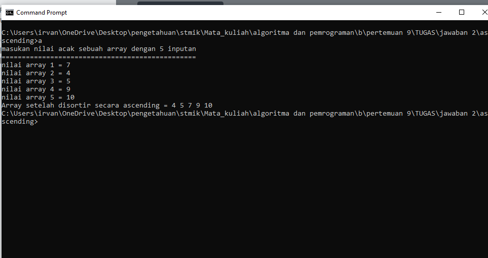
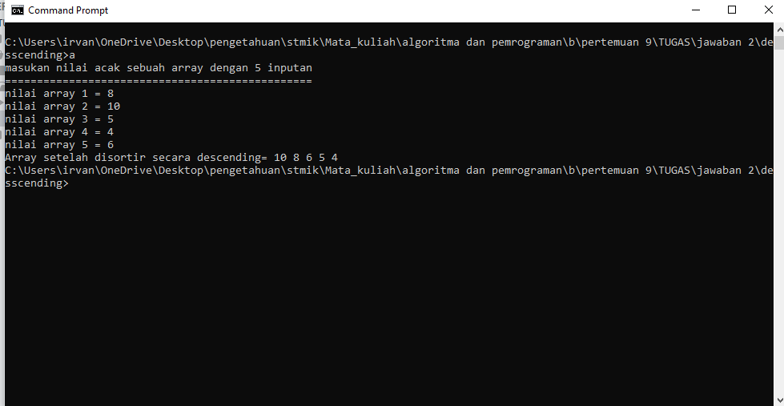

Program c++ Bubble sort Asscending dan Desscending
Program Asscending
#include <iostream> using namespace std; // Function prototypes int Ascending(int arr[], int n); int main() { int arr[5]; int n = sizeof(arr) / sizeof(arr[0]); cout<<"masukan nilai acak sebuah array dengan 5 inputan"<<endl; cout<<"================================================"<<endl; cout<<"nilai array 1 = ";cin>>arr[0]; cout<<"nilai array 2 = ";cin>>arr[1]; cout<<"nilai array 3 = ";cin>>arr[2]; cout<<"nilai array 4 = ";cin>>arr[3]; cout<<"nilai array 5 = ";cin>>arr[4]; // ascending Ascending(arr, n); cout << "Array setelah disortir secara ascending = "; for (int i = 0; i < n; i++) { cout << arr[i] << " "; } return 0; } // function untuk array asscending menggunakan bubble sort int Ascending(int arr[], int n) { for (int i = 0; i < n - 1; i++) { for (int j = 0; j < n - i - 1; j++) { //menghitung asscending if (arr[j] > arr[j + 1]) { // menukar arr[j] dan arr[j+1] int temp = arr[j]; arr[j] = arr[j + 1]; arr[j + 1] = temp; } } } }
ouput Ascending
klik gambar untuk full screen

x close
Program Desscending
#include <iostream> using namespace std; // Function prototypes int Descending(int arr[], int n); int main() { int arr[5]; int n = sizeof(arr) / sizeof(arr[0]); cout<<"masukan nilai acak sebuah array dengan 5 inputan"<<endl; cout<<"================================================"<<endl; cout<<"nilai array 1 = ";cin>>arr[0]; cout<<"nilai array 2 = ";cin>>arr[1]; cout<<"nilai array 3 = ";cin>>arr[2]; cout<<"nilai array 4 = ";cin>>arr[3]; cout<<"nilai array 5 = ";cin>>arr[4]; // descending Descending(arr, n); cout << "Array setelah disortir secara descending= "; for (int i = 0; i < n; i++) { cout << arr[i] << " "; } return 0; } // function untuk arrat descending menggunakan bubble sort int Descending(int arr[], int n) { for (int i = 0; i < n - 1; i++) { for (int j = 0; j < n - i - 1; j++) { //menghitung descending if (arr[j] < arr[j + 1]) { // menukar arr[j] dan arr[j+1] int temp = arr[j]; arr[j] = arr[j + 1]; arr[j + 1] = temp; } } } }
ouput Desscending
klik gambar untuk full screen

x close
Sebelumnya
Lanjut